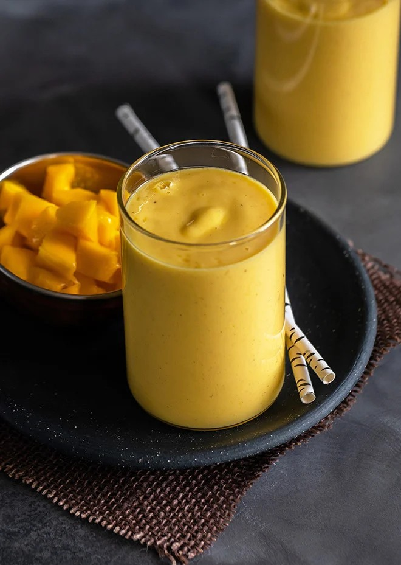
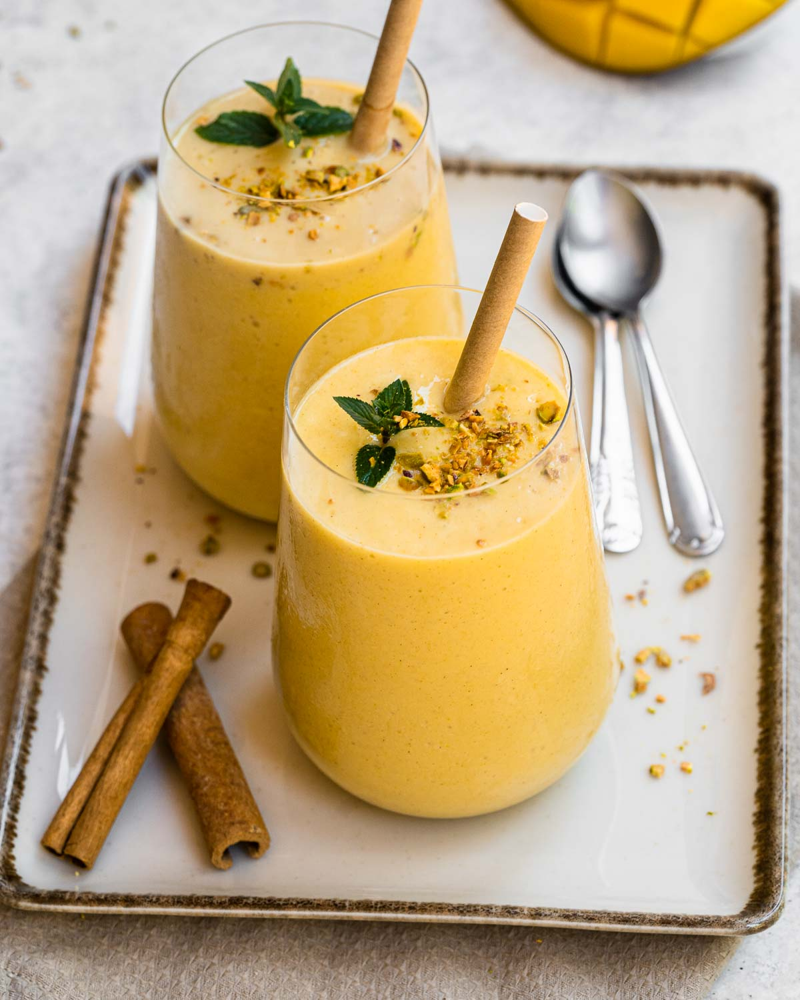

Mango Lassi

This mango lassi is my go-to when I want something cold, creamy, and just the right amount of sweet.
It's super easy to make—just toss everything in a blender and you're done in five minutes.
The mango gives it that tropical vibe, while the yogurt makes it rich and refreshing at the same time.
I like adding a pinch of cardamom for that extra depth, but it's just as good without.
Perfect for a hot day, a post-meal treat, or honestly whenever you're craving something smooth and fruity.
General Info:
- Prep Time: 5 mins
- Total Time: 5 mins
- Servings: 2
Nutrional Facts
- Calories: 160
- Fat: 3.5g
- Carbs: 28g
- Protein: 5g
Ingredients
- 1 cup chopped ripe mango (fresh or canned)
- 0.75 cup plain yogurt
- 0.5 cup milk
- 1–2 tablespoons sugar (to taste)
- A pinch of cardamom powder (optional)
- Ice cubes (optional)
Steps
- Gather all ingredients.
- Add mango, yogurt, milk, sugar, and cardamom (if using) to a blender.
- Blend until smooth and creamy.
- Taste and adjust sweetness or thickness by adding more sugar or milk as needed.
- Add ice cubes if you prefer it chilled, and blend again briefly.
- Pour into glasses and serve immediately. Garnish with a sprinkle of cardamom or chopped pistachios if desired.

Recipes